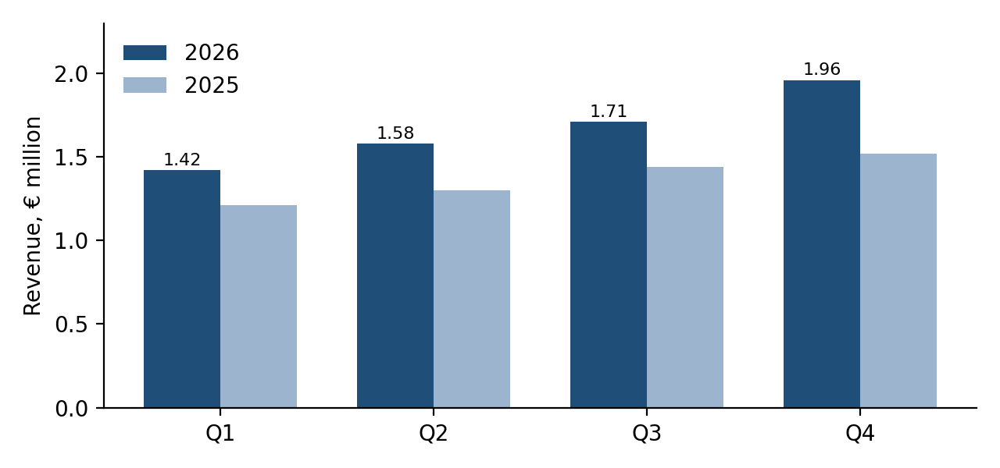

Soil moisture, crop emergence and recommendations for the Zemgale fields
The spring survey covered 42 fields across three farms. Emergence was 6% faster than in 2025, and soil moisture stayed within the optimal band on most fields.1
| Farm | Fields | Moisture (%) | Plants per m² |
|---|---|---|---|
| Ozolkalni | 18 | 24.1 | 312 |
| Bērzciems | 14 | 21.7 | 298 |
| Lejas | 10 | 26.3 | 305 |
Revenue for the season is projected as shown below.

Good soil structure is worth more than any single input.
Contact: anna@example.org